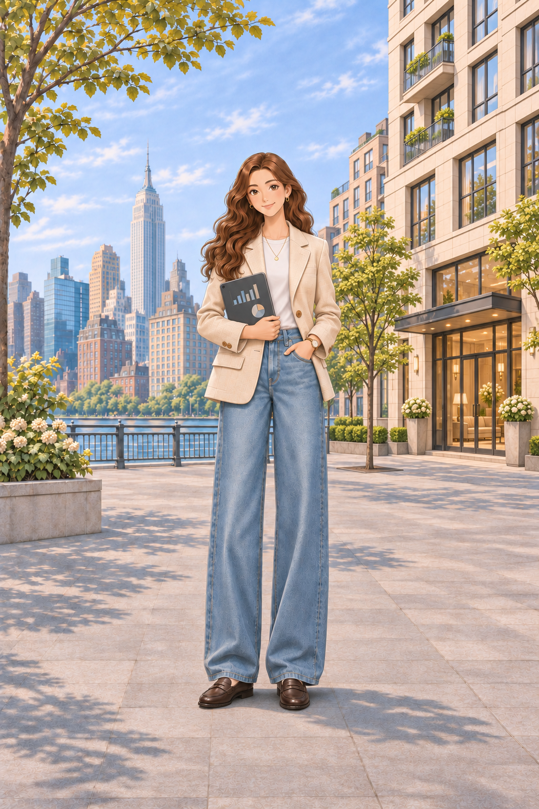
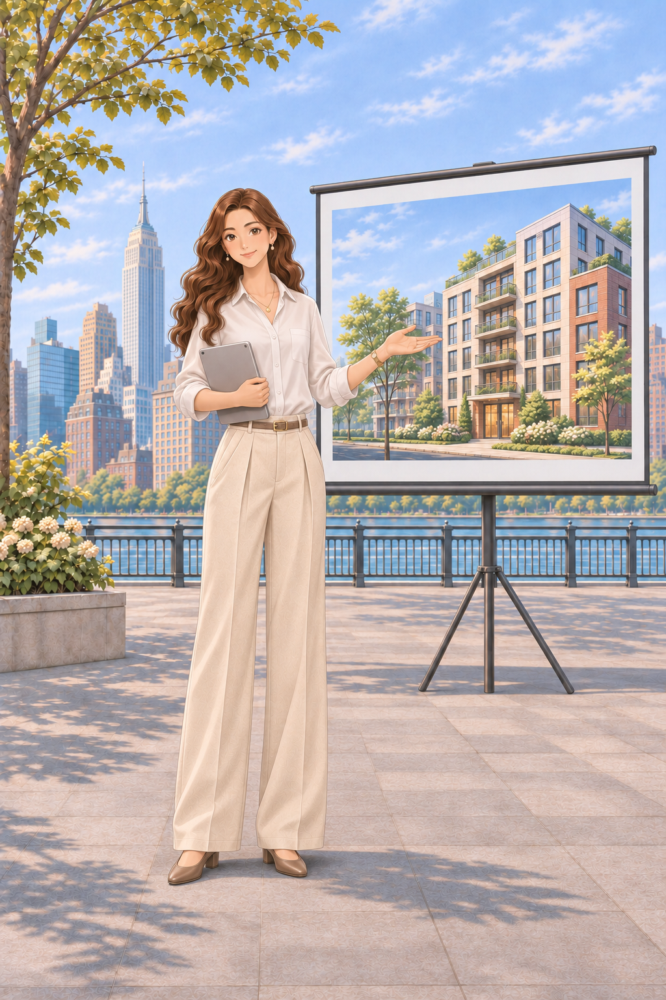
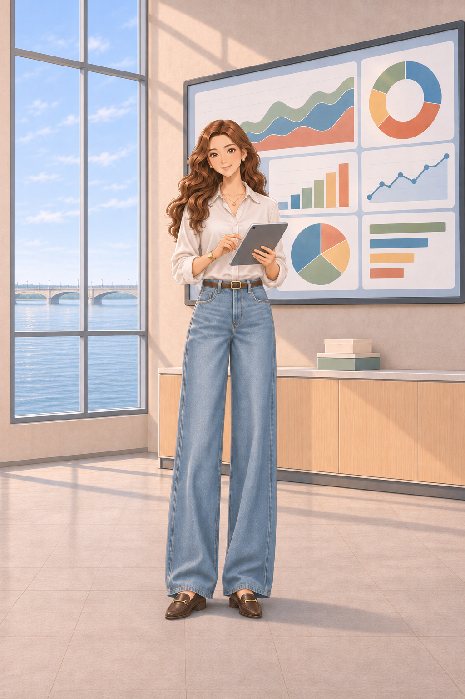
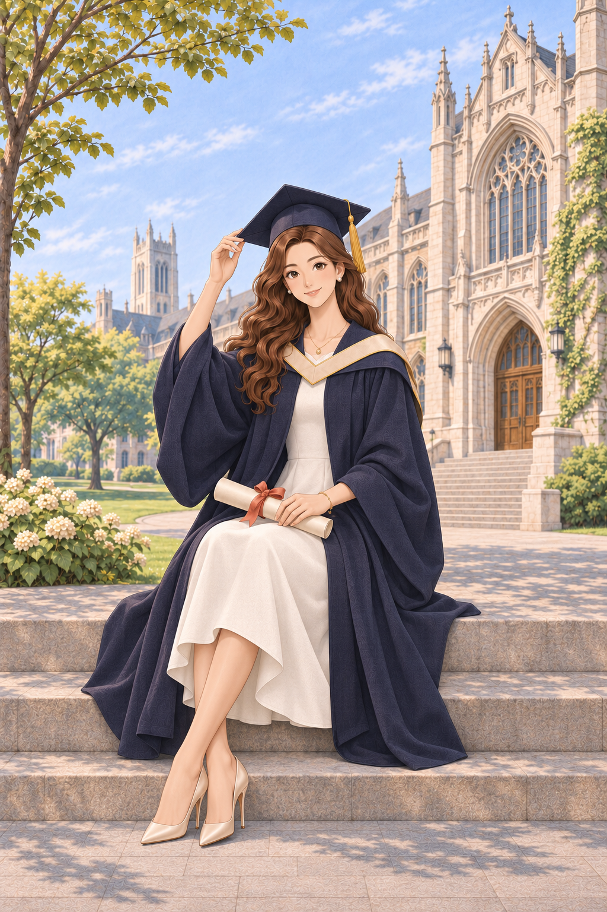
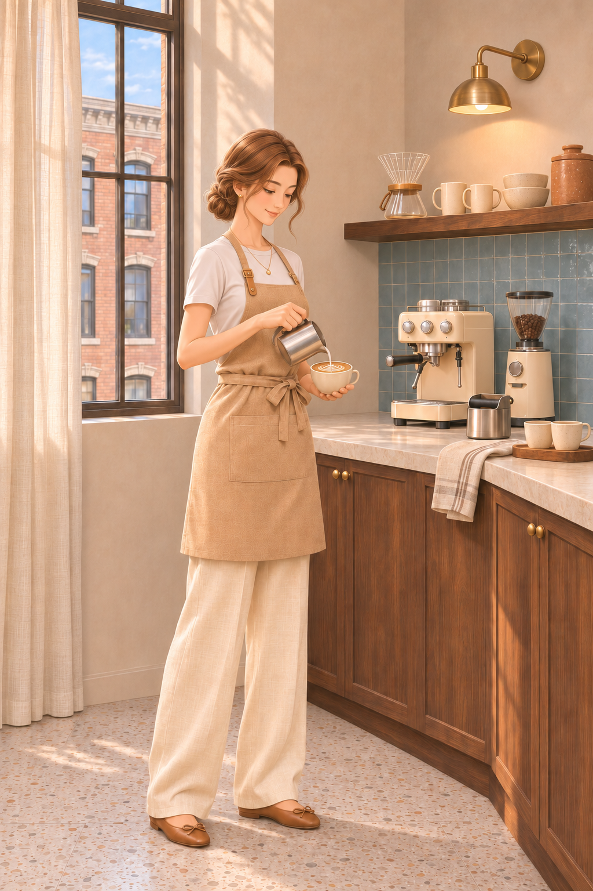
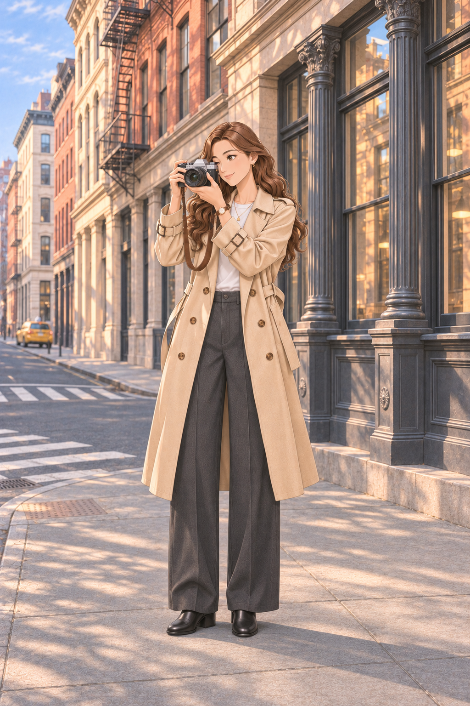
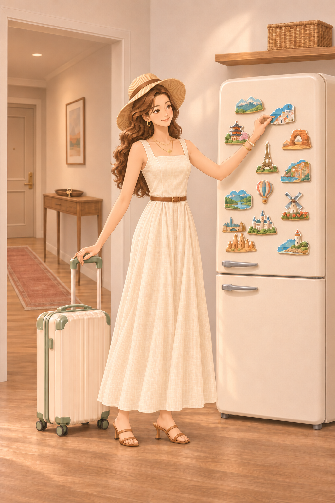
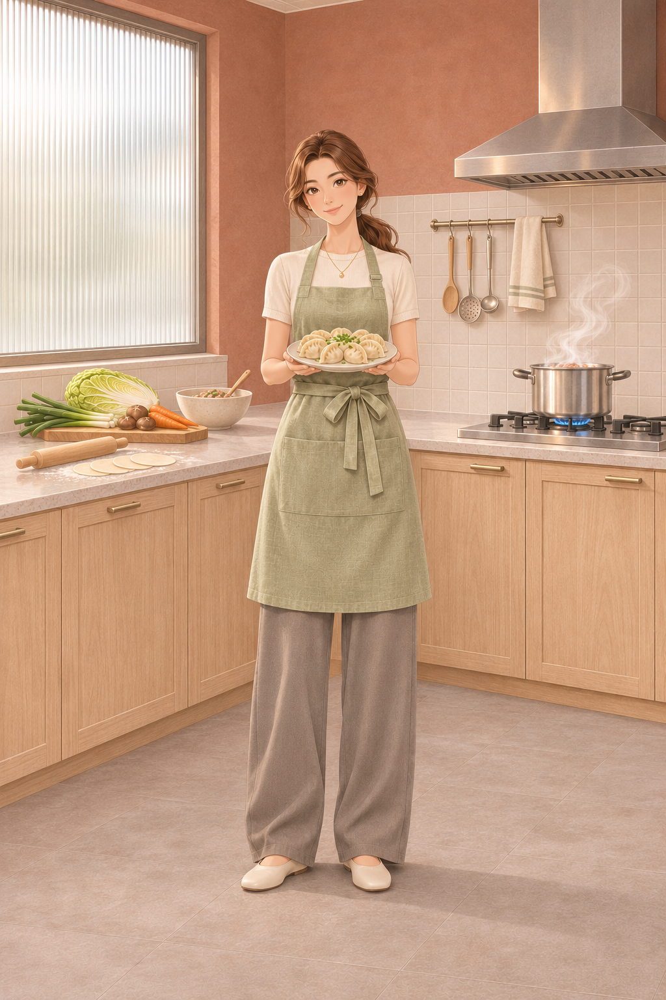

The selected eight / 23 Nov 2026
YING JIN.
Eight approved illustrations. Select an image to open the full-resolution original.
Download all eight
Marketing Analyst

Sales & Marketing

Data & Analytics

Education

Coffee

Photography

Travel
